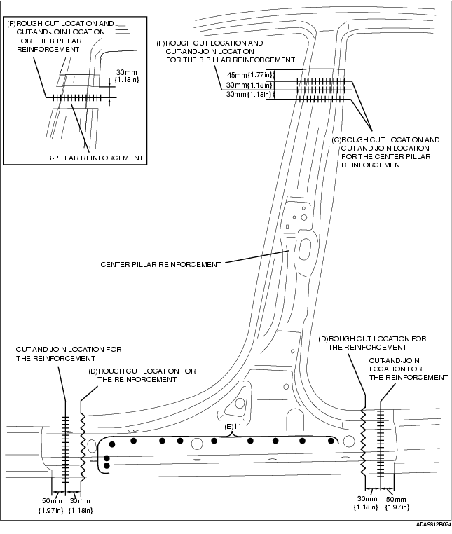
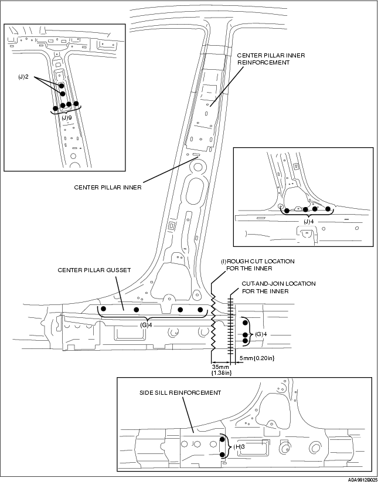

Center pillar removal
1. Rough cut area (A), drill the 56 weld locations indicated by (B), then remove the center pillar outer.

2. Rough cut area (C) and (D), drill the 11 weld locations indicated by (E)
- • When rough cutting area (C), it is possible that the B-pillar reinforcement could be damaged. When cutting, be careful not to cut or damage the B-pillar reinforcement.
3. Rough cut area (F), then remove the center pillar reinforcement and B-pillar reinforcement.

4. Drill the 8 weld locations indicated by (G), and remove the center pillar gusset.
5. Drill the 3 weld locations indicated by (H), and remove the side sill reinforcement.
6. Rough cut area (I), drill 15 weld locations (J), and then remove the center pillar inner by pulling it from the lower part.
